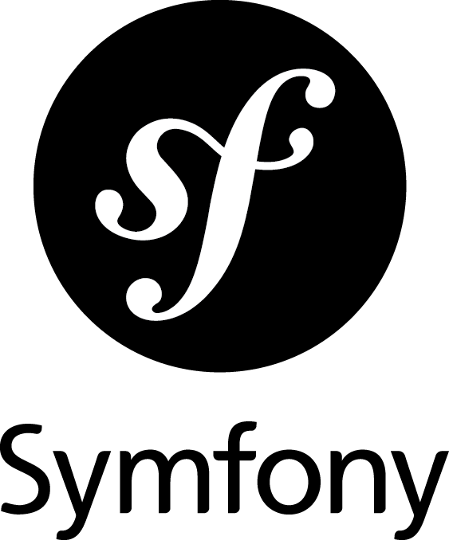
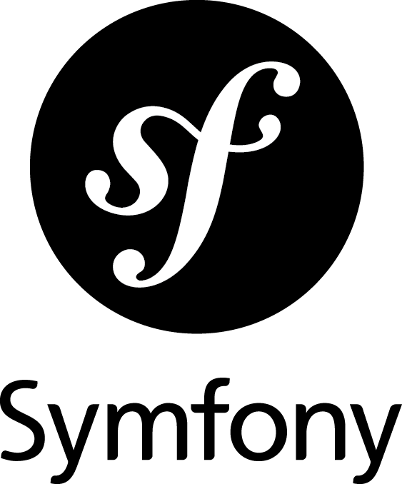

Jeune développeur diplômé d'un BTS SNIR au lycée Christophe Colomb, je suis passioné par l'informatique et plus particulièrement le développement Web. Ce site recense mon parcours, mes compétences ainsi que mes projets.
Je suis actuellement à la recherche d'un poste dans le développement Web (idéalement un stage ou une alternance).
Ce site est actuellement non fini, je l'améliore et complète au fur et à mesure de l'évolution de mes compétences.


 



Lycée Polyvalent Christophe Colomb
Sucy-en-Brie, France
2017-2019
Découverte de l'UML, apprentissage des languages HTML, CSS, JavaScript, études de réseaux, réalisation d'applications en C++ avec QT. Réalisation d'un projet de groupe.
Lycée Polyvalent Christophe Colomb
Sucy-en-Brie, France
2015-2017
Découverte de l'algorithmique et de la programmation sur carte Arduino. Réalisation d'un projet de groupe.
Conseiller Multimédia - Centr'Apel
Paris, France
OCtobre 2020 - Actuellement
Tâche 1
Tâche 2
Tâche 3
Agent de tri - Amazon Logistics
Bonneuil sur Marne, France
Avril-Mai 2020
Chargement et déchargement de camion avec transpalette manuel
Tri sélectif des colis par transporteurs
Scan des colis
Répartition informatiques et physiques des colis dans les sacs et les boxs
Bonneuil sur Marne, France
Juillet-Aôut 2018
Gestion de boîtes mails
Gestion de dossier
Identification de fichier
Meudon, France
Mai-Juin 2018
Analyse et création d'un script pour des paquets d'un réseau RF/PLC
Analyse de trames
Développement en python d'un script

Autolib
Projet de BTS en groupe, l'objectif est de reproduire le système Autolib avec diverses fonctionnalités comme la réservation de véhicule, la simulation du véhicule sur Raspberry, etc.
Technologies
C++ C Qt Raspberry Pi
Liens

Assistance à la personne: Supervision médicale
Projet de Bac en groupe, l'objectif est de réaliser un système avec Arduinno permettant de détecter la chute d'une personne, de mesurer le rythme cardiaque, prévenir les secours, etc.
Technologies
C Arduino
Liens